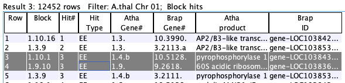
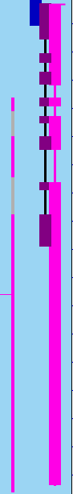

|
|
SyMAP Queries |

|
|
|
|||
| >Instructions | >Query Setup | Query Result Panel | >Results |
| General | Result table | ||
| Single gene | Columns | ||
| Pair hits | Pair, Single, Auto-save | ||
| Gene Groups | Top button | ||
| Statistics |
See Terminology in the User Guide,
especially the
>Instructions
To open the query interface, first select two or more sequence projects in the Project Manager. Then select the

The
Open the
>Query Setup | Go to top |
Set up the desired filters and then select
Rules
|
1. All queries are on the 2. All |  |
|
3. All 4. 5. Most filters can be used in conjunction with other filters; options will be disabled if they cannot be used with a selected filter. |  |
1. General | Go to top |
Enter a substring: the entire annotation string (i.e. column |

|
| Select a specific chromosome for the species. This is the most common query to use in conjunction with others. | ||
| The | ||
| The |
For
For
It is valid to only enter the
2. Single gene | Go to top |
| The |

|
Orphan genes (no hits)
Genes that do not a have a hit and meet the additional filters. The orphan genes are relative to the projects shown on theInstruction page. For example, if species X, Y and Z have synteny computed between all pairs, but only X and Y are selected, the orphan genes for X would be those with no hits to Y. If X,Y&Z are selected, the orphan genes for X would be those with no hits to Y and Z.
All genes (w/o hits) , i.e. genes with and without hits
This shows all genes that meet the additional filters, regardless if they have a hit or not. There is always the same set of genes for a project, regardless of synteny.
Allowed filters for singles: both options can be restricted by:
- Using the
Project pull-down, select a project. - If a project is selected, then a chromosome and optional location can be selected.
- An
Annotation Description may be entered.
3. Pair hits | Go to top |
| Each hit connects two species (projects) and hence represents a pair of aligned regions for two of the selected species. Filters are as follows: |

|
| Yes | Only hits that are part of a synteny
block will be returned. All hits will have a value for the | ||
| No | Only hits that are NOT part of a synteny
block will be returned. No hits will have a value for the |
| Every | Only hits that align to a gene on one or both sides of the hit will be shown.
The | ||
| Every* | This is like the | ||
| One | Only hits that align to a gene on ONE end will be shown.
The | ||
| Both | Only hits that align to genes on BOTH end will be shown.
The | ||
| None | Only hits that do NOT align to a gene
on either end will be shown. The |
| >= [=, >=] N | List all hits in collinear sets that have size >= N or = N or <= N, respectively.
The text box must have an integer >0; | ||
| Ignore | Do not filter on collinear set sizes. |
See Collinear, which explains the SyMAP collinear sets.
Enter a single block number (the
Enter a set number (the
The hits are numbered for each chromosome pair, e.g. there will be a Hit#1 for every chromosome pair that
has hits. If a hit aligns to multiple genes, both major and minor genes will be shown.
Enter a
• If only a number is entered, all genes with the numeric prefix will be displayed (including minor hits).
• If a number.suffix is entered, the exact gene will be displayed (but no minor hits).
This query results in values for the
4. Gene Groups | Go to top |
4.1 Multi-hit Genes>= N

List all hits genes that have >= N hits, where multiple hits can join the same two genes.
The target gene refers to the gene with >= N hits to the opposite species.
The options are as follows:
| (Algo2 only) The hits must be to exons in the target gene. | |||
| Include minor hits on either chromosome. | |||
| The >=N hits must all be on the same opposite chromosome. | |||
| (Annotated species only): The >=N hits must be to a tandem array of genes.
| |||
Good associated filters:
|
| When used with a specified chromosome,
restricts the target genes with >= N hits to the specified chromosome.
For example:
|
| | Each target gene must have its N hits to genes on the opposite species (not needed with the
| |
Table can list the same hit multiple times:
| For all other queries, a hit will only be listed once for a chromosome pair; however, that is not
the case for this query. That is because gene X and gene Y may be connected by a hit, where both gene X
and gene Y have >=N, so both groups need to be shown.
An example is shown on the right, where the two highlighted rows are the same, but in two different groups (grp#1 for gene 5.1458 and grp#4 for gene 3.638). |

|
4.2 PgeneF (putative gene families)
Note: this has not been tested for a long time except superficially (i.e. making sure it has the same results as the previous
release).
| Using the hits that pass the other filters, SyMAP constructs putative gene families (PgeneFs) spanning the selected species. This is done by grouping hits which overlap on at least one genome. |

|
| Additional options are provided when >2 species are selected. Note, if you have more than 6 species selected, this stage can take an hour or more. |

|
Each PgeneF is given a number, which is shown in the Query Results table (column name
Filters using the PgeneF values:
These filters permit searching for gene families shared by one group of species but not
present in another.
If a species is checked to include, then the PgeneF will only be retained if it includes at least one hit which hits that species.
For >2 species only: If a species is checked to exclude, then the PgeneF will be discarded if any of its hits are to that species.
| Find PgeneFs which are not yet annotated. A PgeneF will be discarded if it is annotated on any of
the species which are checked in the | |
| For >2 species only: Require the PgeneF to be fully linked, i.e. for each pair of species A and B in the group, there must be a hit linking A to B. | |
| For >2 species only: Only PgeneF hits will be shown if they have hits to the included species, although the PgeneF numbers will reflect groupings created using all hits. |
Query Result Panel | Go to top |
1. Results Table
A pair hits table
Pair Hits :- The table contains columns for all of the selected species, but each hit only connects two species, and the other species columns are empty.
- Each
Hit# is only listed once unless minor genes are included (see Rules). - A gene may be listed more than once if multiple hits align to it with a best overlap (i.e. major gene with multiple hits).
Single genes :- If the query specified
Single genes, then each row represents one gene and shows data only for one species.
- If the query specified
You can sort the columns by clicking the column name in the table, and rearrange them by dragging the
column name. You can add/remove columns using the
2. Columns | Go to top |

| The buttons on the bottom will be |
In the column panel shown above, hover over a column name to see its brief description. Following are the full descriptions of the columns.
2.1 Pair hits columns | Go to top |
| Row number within the table | ||
| Synteny block containing this hit (if any). The format is Cn.Cm.Block#, where Cn and Cm are the chromosome numbers. | ||
| The number of hits which comprise the synteny block. | ||
| Collinear set containing this hit (if any). The format is Cn.Cm.Size.Set# (e.g. 1.2.5.100; there are 5 adjacent gene hits in set# 100 on Chr1 to Chr2). | ||
| If | ||
| If | ||
| The hit number, which are sequential numbers for the chromosome pair.
This number is shown on the | ||
| Percent identity of the alignment. The value of the "Identity" column is from the MUMmer file. If the hit has subhits, then this is an approximation. | ||
| Percent similarity of the alignment (as determined by the BLOSUM scoring matrix). The value of the "Similarity" column is from the MUMmer file. If the hit has subhits, then this is an approximation. | ||
| The number of subhits in a clustered hit. | ||
| If "=", both hit ends are to the same strand; if "!=", they are to different strands. | ||
| The length of the subhits within a clustered hit are summed taking into accounts overlaps; the longest summed subhits of both sides is shown. See Clustered Hits in Terminology. | ||
| There are two alternative algorithms for clustering the hits on database creation.
| ||
|
| ||
| Chromosome of the hit. | ||
| Start and end of the annotated gene. The | ||
| The gene number is C.#.{a-z}. The C is the chromosome number.
The # is the sequential number along the chromosome.
If a run of genes overlap, they receive the
same gene number with different suffixes {a-z, a2-z2, etc}. This is shown on the | ||
| Start and end of the hit region. | ||
| Hend-Hstart+1 | ||
| The value depends on which NOTE: For gene overlap, | ||
| The keywords for the annotations of each species are listed;
they can be different for each species.
See Project Parameters
for modifying the keywords shown. The | ||
2.2. Single genes columns | Go to top |
| This is the number of hits to the gene in the ENTIRE databases, except for SELF synteny.
For example, if X, Y and Z species have all been compared for synteny, but only Y and Z are being queried, the |
Single result from 3 selected species

| Single result from 2 selected species

|
In the above tables, the A.thal gene #2 is the 2-species table because it has not hit to Cabbage; but it is not in
the 3-species table because it does have a hit to A.thal. The values of
The other query on singles is for
2.3 Auto-save columns
The columns selection is saved in a file called .symap_saved_props in the user's home directory. If you only have one SyMAP database, there is no need to read the following:Say the last database Dn queried had N species, and the current database Dm has M species, where Dn and Dm are different SyMAP databases:
- If N=M: the
General andGene&Hit Info columns will be set according to the previous settings, but theAnnotation columns may be wrong. - If N>M or N<M: the
General will be according to the previous settings, allGene&Hit Info columns will be set like the first Dn species, and noAnnotation columns will be set.
3. Top button functions | Go to top |
|
|

|
|
Columns for 3 of the 4 options: | 
|

{kind=link}
{kind=link}
{kind=link}
{kind=link}
{kind=link}
{kind=link}
| Option | Column* | Selected Hit | Display Filter |
| N/A | The hit is padded to each side by the amount indicated (default 50kb). | ||
| The entire block for the hit will be shown. | |||
| The collinear set for the hit will be shown.
| |||
| The group for the hit will be shown, where they are required to be on the
same chromosome pair as the selected row.
The hits are highlighted in the "Special" color, e.g. Example. See High below for disabling the highlighting. |
After the initial display, the
If the
|
|

|
4. Statistics | Go to top |
{kind=link}
Most of the statistics are self-explanatory except the following:
>Results | Go to top |

All query results are listed under the
The only way to remove query results from the left tab is by selecting them in this table followed by